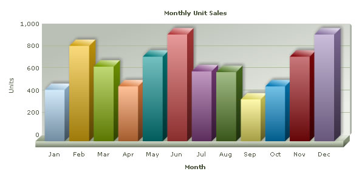

FusionCharts XT can effectively be used with Ruby to plot dynamic data-driven charts. In this set of examples, we will show a few basic examples to help you get started.
We will cover the following examples here:
- Use FusionCharts XT in Ruby with a pre-built Data.xml (which contains data to plot)
- Change the above chart into a single page chart using dataStr method.
- Use HTML Embedding method to render the chart
- Configure the chart using YML configuration file.
- Create pure JavaScript charts
- Use JSON data to create chart
- Create multiple charts in a single page
- Create transparent chart
- Set managed printing for Mozilla browsers
Let's quickly see each of them.
Before you proceed with the contents in this page, we strictly recommend you to please go through the How FusionCharts XT works? section.
All code discussed here is present in
Controller :
Download Package >Code >RoR >SampleApp >app >fusioncharts > controllers >basic_example_controller.rb.
View : Download Package > Code > RoR > SampleApp > app > views > fusioncharts > basic_example folder.
View Helper Modules: Download Package > Code > RoR > SampleApp > lib > fusion_charts_helper.rb
YML Configuration File: Download Package > Code > RoR > SampleApp > public > Data > chart_options.yml
All the charts can be accessed from the index controller in this manner: http://<ipaddress:port>/fusioncharts/index
In our code, we have used the charts contained in Download Package > Code > RoR > public >FusionCharts folder. When you run your samples, you need to make sure that the SWF files are in proper location. Also the Data.xml file used in simple_chart action is present in the Download Package > Code > RoR > public > Data folder.
Let's now start building our first example. In this example, we will create a "Monthly Unit Sales" chart using the dataUrl method. For a start, we will manually code our XML data in a physical XML document Data.xml and then utilize it for our chart.
Let's first have a look at the XML Data document:
<chart caption='Monthly Unit Sales' xAxisName='Month' yAxisName='Units'
showValues='0' formatNumberScale='0' showBorder='1'>
<set label='Jan' value='462' />
<set label='Feb' value='857' />
<set label='Mar' value='671' />
<set label='Apr' value='494' />
<set label='May' value='761' />
<set label='Jun' value='960' />
<set label='Jul' value='629' />
<set label='Aug' value='622' />
<set label='Sep' value='376' />
<set label='Oct' value='494' />
<set label='Nov' value='761' />
<set label='Dec' value='960' />
</chart>
This XML is stored as Data.xml in Data folder under public folder. It basically contains the data to create a single series chart to show "Monthly Unit Sales". We will plot this on a Column 3D Chart. Let's see how to do that.
To plot a chart that consumes this data, you need to include the HTML/JavaScript code to embed a Flash object and then provide the requisite parameters. To make things simpler for you, we have put all this functionality in a function named as render_chart. This function is present in the fusion_charts_helper.rb file in the lib folder and is accessible to all views by including it in the application_helper.rb as shown:
include FusionChartsHelper
We will define a function called simple_chart in the controller. The view used for this controller is the simple_chart.html.erb file. We will use a layout to contain all the common elements of the HTML.erb files that we will be using and put only the specific elements or ruby code in individual templates.
Let's see it in an example:
Controller: Fusioncharts::BasicExampleController
Action: simple_chart
class Fusioncharts::BasicExampleController < ApplicationController
#This is the layout which all functions in this controller make use of.
layout "common"
#Here, we have used a pre-defined Data.xml (contained in /Data/ folder)
#Ideally, you will not use a physical data file. Instead you will have
#your own code virtually relay the XML data document. Such examples are also present.
#For a head-start, we have kept this example very simple.
#This function uses the dataUrl method of FusionCharts.
#A view with the same name simple_chart.html.erb is present
#and it is this view, which gets shown along with the layout "common".
#render_chart function from the helper is invoked to render the chart.
#The action itself has no code, all the work is done in the builder and the view.
def simple_chart
end
. . .
end
View:
<% @page_title="FusionCharts - Simple Column 3D Chart" %>
<% @page_heading="FusionCharts Examples" %>
<% @page_subheading="Basic example using pre-built Data.xml" %>
<% #Create the chart - Column 3D Chart with data from /Data/Data.xml
render_chart "/FusionCharts/Column3D.swf", "/Data/Data.xml", "", "myFirst", 600, 300, false, false do-%>
<% end -%>
The simple_chart action of the controller will render the view simple_chart.html.erb. In this view, we call the render_chart function present in the fusion_charts_helper.rb, using the Data Url method by passing the second parameter as the path to the xml file.
We will not go into the details of the code present in the render_chart function of FusionChartsHelper.
The actions in this controller use a layout named "common". This file common.html.erb is present in the views/layouts folder. We will see the details of this layout in a minute.
As seen above, we have not written any code in the action simple_chart - the action is just defined empty. Rails by default, renders a template by the same name. (In this case, simple_chart.html.erb)
In the simple_chart.html.erb template, we have assigned values for page_title, page_heading and page_subheading variables which will be used in the "common" layout.
All the actions in this controller use the "common" layout.
This is the layout used by most templates in our application. Here we place all the common elements of the page, so that, in each template., only the specifics can be dealt with. Here is how it looks:
<!DOCTYPE HTML PUBLIC "-//W3C//DTD XHTML 1.0 Transitional//EN" "http://www.w3.org/TR/xhtml1/DTD/xhtml1-transitional.dtd">
<html xmlns="http://www.w3.org/1999/xhtml">
<head>
<meta http-equiv="Content-Type" content="text/html; charset=utf-8" />
<title><%= @page_title %></title>
<%= stylesheet_link_tag "style" %>
<%= javascript_include_tag "jquery.min" %>
<%= javascript_include_tag "lib" %>
<%= javascript_include_tag "DD_belatedPNG_0.0.8a-min" %>
<!--[if IE 6]>
<script>
/* select the element name, css selector, background etc */
DD_belatedPNG.fix('img');
/* string argument can be any CSS selector */
</script>
<![endif]-->
<style type="text/css">
h2.headline {
font: normal 110%/137.5% "Trebuchet MS", Arial, Helvetica, sans-serif;
padding: 0;
margin: 25px 0 25px 0;
color: #7d7c8b;
text-align: center;
}
p.small {
font: normal 68.75%/150% Verdana, Geneva, sans-serif;
color: #919191;
padding: 0;
margin: 0 auto;
width: 664px;
text-align: center;
}
</style>
<%
#You need to include the following JS files,
#if you intend to embed the chart using JavaScript.
#When you make your own charts, make sure that the path to this
#JS file is correct. Else, you will get JavaScript errors.
%>
<%= javascript_include_tag "FusionCharts" %>
</head>
<body>
<div id="wrapper">
<div id="header">
<div class="back-to-home"><%= link_to 'Back to home', :controller=>'fusioncharts/index'%></div>
<div class="logo">
<a href="http://www.fusioncharts.com"><%= image_tag "fusionchartsv3.2-logo.png",
:width=>"131", :height=>"75", :alt=>"FusionCharts v3.2 logo" %></a>
</div>
<h1 class="brand-name">FusionCharts</h1>
<h1 class="logo-text"><%= @page_heading %></h1>
</div>
<div class="content-area">
<div id="content-area-inner-main">
<h2 class="headline"><%= @page_subheading %></h2>
<div class="gen-chart-render">
<%= yield %>
</div>
<div class="clear"></div>
<p> </p>
<p class="small"><%= @intro %>
<!--<p class="small">This dashboard was created using FusionCharts XT,
FusionWidgets XT and FusionMaps v3 You are free to reproduce and distribute this dashboard
in its original form, without changing any content, whatsoever. <br />
© All Rights Reserved</p>
<p> </p>-->
</p>
<div class="underline-dull"></div>
</div>
</div>
<div id="footer">
<ul>
<li><%= link_to '« Back to list of examples', :controller=>'fusioncharts/index'%></li>
<li class="pipe">|</li>
<li><a href="/NoChart.html"><span>Unable to see the chart above?</span></a></li>
</ul>
</div>
</div>
</body>
</html>
As you will notice, this layout contains all the common elements of the page like <html> ,<head>,<body>. Note that the included javascript file (FusionCharts.js) will not be used by basic_chart and basic_data_xml views of the controller Fusioncharts::BasicExampleController but all other views that use this layout will use this javascript. Hence it has been included here.
This layout, gets the page title from a variable @page_title and puts it within the <title> </title> tags. Similarly, inside the body tag, it renders the values of @page_heading and @page_subheading. These values might differ from one template to the other and hence, each template needs to assign values to these variables, as seen in the view for simple_chart action.
At the bottom, there is a link to "/NoChart.html" which will display information to the user, in case he/she is unable to view the chart. The <%=yield%> inside the body ensures that any content in our specific template are included before rendering the page.
The render_chart function takes the following parameters:
| Parameter | Description |
| chart_swf | SWF File Name (and Path) of the chart which you intend to plot. Here, we are plotting a Column 3D chart. So, we have specified it as /FusionCharts/Column3D.swf |
| str_url | If you intend to use the dataURL method for the chart, pass the URL as this parameter. Else, set it to "" (in case of dataStr method). In this case, we are using Data.xml file, so we specify Data/Data.xml |
| str_data | If you intend to use dataStr method for this chart, pass the XML data as this parameter. Else, set it to "" (in case of dataURL method). Since we are using dataURL method, we specify this parameter as "". |
| chart_id | ID for the chart, using which it will be recognized in the HTML page. Each chart on the page needs to have a unique ID.
To provide cross-browser compatibility, we recommend you not to start the ID with a numerical value, nor use space as part of the ID. |
| chart_width | Intended width for the chart (in pixels) |
| chart_height | Intended height for the chart (in pixels) |
| debug_mode | Whether to start the chart in debug mode. Please see Debugging your Chart Section for more details on Debug Mode. |
| register_with_js | Whether to register the chart with JavaScript. Please see FusionCharts XT and JavaScript section for more details on this. |
| options | Hash containing other parameters to the function ( explained below) |
The options hash can contain the following elements:
| Parameter | Description |
| renderer | The renderer for this chart. Can take values "flash" or "javascript" . |
| data_format | The format of the given data. Currently, it can take values "xml","xmlurl","json" and "jsonurl". If no value is provided for this option, then if str_url parameter is passed the value for this will be taken as "xmlurl" and if the str_data parameter has a value then data_format will be taken as "xml". |
| w_mode | The Window mode is the default mode. – In this mode, the chart or the Flash Player acts as a separate window, always lying above the HTML elements. So the HTML elements, like HTML menu, are liebelow the chart. In the Opaque mode, the chart, unlike the Window mode, stays integrated with HTML elements. Here, the DHTML elements can come over the chart. The transparent mode is almost like the Opaque mode.However, this mode has a feature that can turn a chart background transparent or translucent (if the bgAlpha attribute is set accordingly) so that the color or HTML elements below the chart (which are part of HTML and not chart) are visible |
| color | Background color of the Flash movie (here chart) which comes below the chart and is visible if chart's background color is set to transparent or translucent using bgAlpha, it also comes as background color of the preloader state like when messages like "Loading chart", "retrieving data" "No data to display" etc. are shown - format - Hexcoded #RRGGBB color e.g. "#ff0000" |
| scale_mode | The noScale mode is the default mode. You are recommended to use this mode "exactFit" - scales the chart to fit the container exactly with width and height (causes distortion in some cases), "noBorder" - constrained scale. (not recommended at all), "showAll" - (not recommended) |
| lang | Language. Currently, it only takes the value, "EN", for English |
| detect_flash_version | If set on, the user will be redirected to Adobe site if Flash player 8 is not installed. |
| auto_install_redirect | Checks the Flash Player version and if version is less than 8 and autoInstallRedirect is set on then asks the user to install Flash Player from Adobe site |
To view this page, you will open the browser and point to the simple_chart action of the basic_example controller present in the Fusioncharts folder. Suppose the host is localhost and port is 3000, then the address to be typed will be: http://localhost:3000/Fusioncharts/basic_example/simple_chart. Or, from the index page as http://localhost:3000/Fusioncharts/index
The chart you see will be like the one shown below:

If you do not see a chart like the one above, please follow the steps listed in Debugging your Charts > Basic Troubleshooting section of this documentation.
Well, that was simple! Creating chart in Ruby on Rails using FusionCharts XT is fun and easy. FusionCharts XT allows the user to provide the xml in two ways. They are dataUrl and dataStr .The simple_chart uses the dataUrl method. Let's now convert the above chart to use dataStr method.
| Function | Parameter | What it does? |
| render_chart | see above | Returns HTML+JavaScript that renders a chart as string. You need to print the string. |
| render_chart_html | see above | Returns HTML that renders a chart as string. You need to print the string. This function is deprecated. |
| enable_FC_print_manager_js | "xml" or "json" | This function helps you set the managed print feature of FusionCharts XT for Mozilla- browsers. It returns a <script> tag . You need to print the string in your page.
Note: Print Manager works only in browsers that supports canvas object. |
| get_UTF8_BOM | Nil | Returns the BOM as a string. This can be used when generating xml containing UTF-8 characters. |
| add_cache_to_data_url | str_data_url : the URL to which the timestamp needs to be appended. | This function can be used when time needs to be added to the Url. |
To convert this chart to use Data string method, we create another action. Here is the controller and view code:
Controller: Fusioncharts::BasicExampleController
Action: data_xml
#A Builder Template is used to build the XML data which is hard-coded.
#Ideally, you will generate XML data documents
#in the builder at run-time,
#after interfacing with forms or databases etc.
#Such examples are also present.
#We set the content-type header to text/html.
#render_chart function from the helper is invoked to render the chart.
#The action itself has no code,
#all the work is done in the builder and the view.
def data_xml
response.content_type = Mime::HTML
end
View:
<% @page_title="FusionCharts - Simple Column 3D
Chart using dataStr method" %>
<% @page_heading="FusionCharts Examples" %>
<% @page_subheading="Basic example using dataStr method
(with XML data hard-coded in Builder Template itself)" %>
<p>If you view the source of this page, you will see that the XML data
is present in this same page (inside HTML code). dataStr method is
ideal when you have to plot small amounts of data.</p>
<%
# The xml is obtained as a string from builder template.
str_xml = render :file=>"fusioncharts/basic_example/sampledata"
#Create the chart - Column 3D Chart with data from str_xml variable
#using dataStr method
render_chart '/FusionCharts/Column3D.swf', '', str_xml, 'myNext',
600, 300, false, false do-%>
<% end -%>
In this view, we obtain the XML from the builder file fusioncharts/basic_example/sampledata and store it in str_xml.
We call the render_chart function to render a Column3D chart (swf present in the public/FusionCharts folder), using the dataStr method by setting the value of str_xml in the third parameter.
Let us now take a look at the builder template.
#Creates xml with values for monthly sales data
#The values required for building the xml are hard-coded in this file
xml = Builder::XmlMarkup.new
xml.chart(:caption=>'Monthly Unit Sales',
:xAxisName=>'Month', :yAxisName=>'Units',
:showValues=>'0', :formatNumberScale=>'0', :showBorder=>'1') do
xml.set(:label=>'Jan',:value=>'462')
xml.set(:label=>'Feb',:value=>'857')
xml.set(:label=>'Mar',:value=>'671')
xml.set(:label=>'Apr',:value=>'494')
xml.set(:label=>'May',:value=>'761')
xml.set(:label=>'Jun',:value=>'960')
xml.set(:label=>'Jul',:value=>'629')
xml.set(:label=>'Aug',:value=>'622')
xml.set(:label=>'Sep',:value=>'376')
xml.set(:label=>'Oct',:value=>'494')
xml.set(:label=>'Nov',:value=>'761')
xml.set(:label=>'Dec',:value=>'960')
end
We have manually coded the XML with the label and value attributes present in the <set> tag. Ideally, you will get this data from database at run-time.
You can also create charts using the HTML embedding method. It creates HTML <object>/<embed> tags to render chart. It does not require FusionCharts.js to render.
The HTML embedding method is deprecated. Many of the features of FusionCharts XT that works in collaboration with JavaScript, like providing JSON data, advanced event-handling, setting chart attribute, etc., will not work using this method.
Again, to make things simpler for you, we have provided a PHP function called render_chart_html which helps you render chart using <object>/<embed> tag and you do not have to get your hands dirty with HTML tags. This function is present in FusionChartsHelper.
Let's now quickly put up a sample to show the use of this function. We load the data from our previously created Data.xml file. The modification involves a single line change from the previous file. and the modification (in bold) will look like the following code:
Controller: Fusioncharts::BasicExampleController
Action: basic_data_xml
#This action demonstrates the ease of generating
#charts using FusionCharts.
#Here, we have used a Builder Template to build the XML data.
#Ideally, you will generate XML data documents at run-time,
#after interfacing with forms or databases etc.
#Such examples are also present.
#Here, we have kept this example very simple.
#render_chart_html function from the helper module is invoked
#to render the chart.
#The function itself has no code(except setting the content type),
#all the work is done in the builder and the view.
def basic_data_xml
response.content_type = Mime::HTML
end
View:
<% @page_title="FusionCharts XT - Simple Column 3D Chart using dataStr method" %>
<% @page_heading="FusionCharts Examples" %>
<% @page_subheading="Basic example using dataStr method (with XML data hard-coded in Builder Template itself)" %>
<p>If you view the source of this page, you will see that the XML data
is present in this same page (inside HTML code). dataStr method is
ideal when you have to plot small amounts of data.</p>
<%
# The xml is obtained as a string from builder template.
str_xml =render :file=>"fusioncharts/basic_example/sampledata"
#Create the chart - Column 3D Chart with data from str_xml variable using dataStr method
render_chart_html '/FusionCharts/Column3D.swf', '', str_xml, 'myNextHTML', 600, 300, false do-%>
<% end -%>
Here we call render_chart_html from FusionChartsHelper and provide the xml from the builder to it as the second parameter. Let us now take a look at the parameters to render_chart_html function.
The render_chart_html function
As seen in the above view, the code written to show the chart is just one line function call to the render_chart_html function present in the fusion_charts_helper.rb. To this function, you need to pass the following parameters (in the same order):
| Parameter | Description |
| chart_swf | SWF File Name (and path) of the chart which you intend to plot. Here, we are plotting a Column 3D chart. So, we have specified it as /FusionCharts/Column3D.swf |
| str_url | If you intend to use the dataURL method for the chart, pass the URL as this parameter. Else, set it to "" (in case of dataStr method). In this case, we are using the Data.xml file, so we specify Data/Data.xml |
| str_xml | If you intend to use dataStr method for this chart, pass the XML data as this parameter. Else, set it to "" (in case of dataURL method). Since we are using the dataURL method, we specify this parameter as "". |
| chart_id | ID for the chart, using which it will be recognized in the HTML page. Each chart on the page needs to have a unique ID. |
| chart_width | Intended width for the chart (in pixels) |
| chart_height | Intended height for the chart (in pixels) |
| debug_mode | Whether to start the chart in debug mode. Please see the Debugging your Charts section for more details on Debug Mode. |
| register_with_js | Whether to register the chart with JavaScript. Please see FusionCharts XT and JavaScript section for more details on this. |
| options | Hash containing other parameters to the function ( explained below) |
The options hash can contain the following elements:
| Parameter | Description |
| w_mode | The Window mode is the default mode. – In this mode, the chart or the Flash Player acts as a separate window, always lying above the HTML elements. So the HTML elements, like HTML menu, are liebelow the chart. In the Opaque mode, the chart, unlike the Window mode, stays integrated with HTML elements. Here, the DHTML elements can come over the chart. The transparent mode is almost like the Opaque mode.However, this mode has a feature that can turn a chart background transparent or translucent (if the bgAlpha attribute is set accordingly) so that the color or HTML elements below the chart (which are part of HTML and not chart) are visible. |
| color | The background color of the Flash movie (here chart) which comes below the chart and is visible if the background color of the chart is set to transparent or translucent using the bgAlpha attribute, it also comes as background color of the preloader state like when messages like "Loading chart", "retrieving data" "No data to display" etc. are shown - format - Hexcoded #RRGGBB color, for example, "#ff0000" |
| scale_mode | The noScale mode is the default mode. You are recommended to use this mode." "exactFit" - scales the chart to fit the container exactly with width and height (causes distortion in some cases) "noBorder" - constrained scale. (not recommended at all) "showAll" - (not recommended) |
| lang | Language. Currently, it only takes the value, "EN", for English |
The above example shows how you can load data using the dataUrl method. You can always use dataStr method to pass XML as string using the render_chart_html method.
In our previous examples, we have created a simple chart by providing the xml to it. Let us now see how we can configure a few properties of the chart. Typically in a rails application, YAML is the format used for configuration purposes. We will adopt the same convention. We will store the configuration of the chart in a yml file (public/Data/chart_options.yml) and merge these values in the XML. Let us see this in an example.
Controller: Fusioncharts::BasicExampleController
Action: configured_chart
# This action loads the yml configuration file,
#these values are used in the builder.
def configured_chart
@chart_options= YAML::load_file("public/Data/chart_options.yml")
end
View:
<% @page_title="FusionCharts - Configured Column 3D Chart" %>
<% @page_heading="FusionCharts Examples" %>
<% @page_subheading="Basic Configured chart example using dataStr method and chart options from yml file" %>
<p>The chart options for this chart have been taken from chart_options.yml file</p>
<%
# The xml is obtained as a string from builder template.
# This xml will also contain the chart configuration attributes loaded from yml
str_xml = render :file=>"fusioncharts/basic_example/sampledatawithchartoptions",
:locals=>{:chart_options=>@chart_options,:option=>"col3d"}
#Create the chart - Column 3D Chart with data from str_xml variable using dataStr method
render_chart '/FusionCharts/Column3D.swf', '', str_xml, 'configuredChart', 600, 300, false, false do-%>
<% end -%>
In the configured_chart action, the YML file is loaded. For this, the load method from the YAML module is used. The view rendered for this action is configured_chart.html.erb. As it can be seen, this view is similar to the view from previous example. The only difference is in obtaining the XML from the builder.
- The builder file used here is sampledatawithchartoptions.builder.
- The parameters passed to this builder as locals are:chart_options=>@chart_options,:option=>"col3d". chart_options is the chart configuration values loaded from the yml file (by the controller). This is passed on to the builder. option value tells the builder which configuration to use. The YML file can contain several configurations; this parameter specifies which one of the configurations should be used in the XML. In our case, we have specified col3d as one of the configurations. Similarly, you could have one configuration per type of chart and use that configuration in the builder while constructing the XML.
Finally, the render_chart method is called, to render the configured chart. A brief glance at the builder sampledatawithchartoptions, will give us the complete picture.
#Creates xml with values for monthly sales data
#The values required for building the xml are hard-coded in this file
#The chart_options are merged
xml = Builder::XmlMarkup.new
options = {:caption=>'Monthly Unit Sales', :xAxisName=>'Month', :yAxisName=>'Units'}
options.merge!(chart_options[option])
xml.chart(options) do
xml.set(:label=>'Jan',:value=>'462')
xml.set(:label=>'Feb',:value=>'857')
xml.set(:label=>'Mar',:value=>'671')
xml.set(:label=>'Apr',:value=>'494')
xml.set(:label=>'May',:value=>'761')
xml.set(:label=>'Jun',:value=>'960')
xml.set(:label=>'Jul',:value=>'629')
xml.set(:label=>'Aug',:value=>'622')
xml.set(:label=>'Sep',:value=>'376')
xml.set(:label=>'Oct',:value=>'494')
xml.set(:label=>'Nov',:value=>'761')
xml.set(:label=>'Dec',:value=>'960')
end
Again, this builder template is similar to the one seen in previous example. Here some of the attributes like caption, xAxisName, yAxisName for the chart are specified and some attributes are taken from the locals hash. Both of these set of attributes are merged and provided as attributes to the chart tag. Here, chart_options[option] gives the configuration attributes specific to col3d only.
Now when we view the chart, we get a beautiful chart as shown below:

FusionCharts XT allows you to create pure JavaScript-only charts that does not require Flash, hence enabling your chart in browsers where Flash is not supported like that of iPhone, iPad, etc. This is achieved by calling the FC_SetRenderer function in PHP before you render your chart. The function sets the current chart renderer to 'javascript'.
The code snippet below shows how you can achieve this:
View:
<%
#Create the chart - Column 3D Chart with data from Data/Data.xml
render_chart '/FusionCharts/Column3D.swf', '/Data/Data.xml', '', 'chart1',
600, 300, false, true, {:renderer=>"javascript"} do-%>
<% end -%>
The above code will create pure-JavaScript FusionCharts as shown in the image below:

You can provide the chart data in JSON format. You need to call FC_SetDataFormat function and set the data format to 'json' through it. Once done, you can pass the JSON data through the renderChart function. If you need to pass JSON data contained in a URL, you need to pass the URL through the dataUrl parameter. If you have JSON as string you need to pass the JSON through the dataStr parameter. The code snippets below illustrates how you can do these:
<%
#Create the chart - Column 3D Chart with data from /Data/Data.json
render_chart "/FusionCharts/Column3D.swf", "/Data/Data.json", "", "myFirst",
600, 300, false, false, {:data_format=>"jsonurl"} do-%>
<% end -%>
<%
# The json is obtained as a string from json template.
str_json = render :file=>"fusioncharts/json_example/data.json"
# replace all newlines
str_json = str_json.gsub(/\n/,"")
#Create the chart - Column 3D Chart with data from str_json
render_chart "/FusionCharts/Column3D.swf", "", str_json, "myFirstJson",
600, 300, false, false, {:data_format=>"json"} do-%>
<% end -%>
FusionCharts XT needs JSON to be passed in a specific format. Please read FusionCharts XT Data Formats > JSON section for more on this.
Please note that JSON data format is not supported in the render_chart_html function.
Creating multiple charts in a page is as easy as creating a single chart. The code below shows how you can call render_chart function and create as many charts as you wish. All you need to take care is that you should set unique chart ID to each chart as highlighted in bold below:
<% #Create the chart - Column 3D Chart with data from Data/Data.xml render_chart '/FusionCharts/Column3D.swf', '/Data/Data.xml', '', 'chart1', 600, 300, false, false do-%> <% end -%> <BR><BR> <% #Create the Column 2D chart render_chart '/FusionCharts/Column2D.swf', '/Data/Data.xml', '', 'chart2', 600, 300, false, false do-%> <% end -%> <BR><BR> <% #Create the Line 2D chart render_chart '/FusionCharts/Line.swf', '/Data/Data.xml', '', 'chart3', 600, 300, false, false do-%> <% end -%>
You can create charts with transparent backgrounds. This makes the chart show what lies below it in HTML. To do this you need to do follow these steps:
- In the chart's XML data, set <chart ... bgAlpha='0,0' ..>
- In the render_chart/render_chart_html function pass :w_mode parameter in options as "transparent".
Below is a sample code with a chart having transparent background :
View:
<% @page_title="FusionCharts - Simple Column 3D Chart" %>
<% @page_heading="FusionCharts Examples" %>
<% @page_subheading="Basic example using pre-built Data.xml" %>
<div style="padding:40px; background-color:#9d7fbd; border:1px solid #745C92; width: 600px;">
<%
#Create the chart - Column 3D Chart with data from /Data/Data.xml
render_chart "/FusionCharts/Column3D.swf", "/Data/Data_Transparent.xml", "", "myFirst_Transparent",
600, 300, false, false, {:w_mode=>"transparent"} do-%>
<% end -%>XML File Data_Transparent.xml: <chart caption='Monthly Unit Sales' xAxisName='Month' yAxisName='Units' showValues='0' formatNumberScale='0' showBorder='1' bgAlpha='0,0' canvasBgAlpha='0'> <set label='Jan' value='462' /> <set label='Feb' value='857' /> <set label='Mar' value='671' /> <set label='Apr' value='494' /> <set label='May' value='761' /> <set label='Jun' value='960' /> <set label='Jul' value='629' /> <set label='Aug' value='622' /> <set label='Sep' value='376' /> <set label='Oct' value='494' /> <set label='Nov' value='761' /> <set label='Dec' value='960' /> </chart>
In the code above we have:
- Created a DIV with purple background -background-color:#9d7fbd;
- We build XML with attributes bgAlpha='0,0' and canvasBgAlpha='0'
- We render the chart with these settings inside that DIV using render_chart
The chart will look as shown below. The purple color of the DIV below the chart is visible through the body of the transparent chart.

FusionCharts XT provides better-print feature for all Mozilla, WebKit, and Gecko based browsers like Firefox, Safari, etc. To enable this feature in RoR all you need to do is call the enable_FC_print_manager function once in your page (preferably at the beginning or end). This will enable the print manager to process print data from all the charts in a page and prepare the charts for better-quality printing. To read more on how print manager works please go through this.
Note: Print Manager works only in browsers that supports canvas object.
The code below shows how you need to enable print manager through RoR:
<% enable_FC_print_manager_js do-%> %> <% end -%> <% #Create the chart - Column 3D Chart with data from Data/Data.xml render_chart '/FusionCharts/Column3D.swf', '/Data/Data.xml', '', 'chart1', 600, 300, false, true do-%> <% end -%>